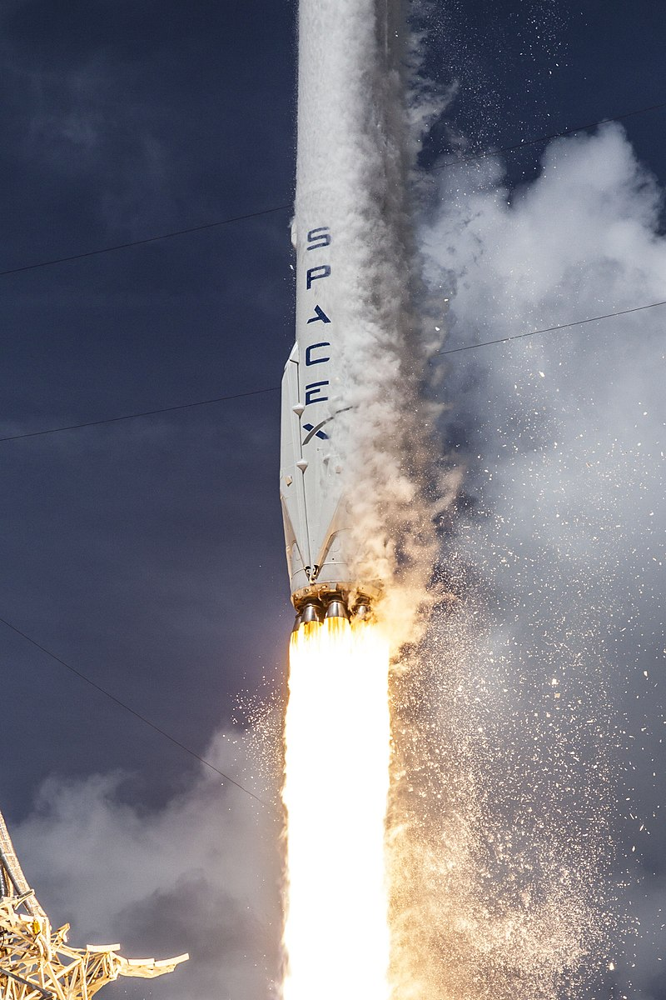

Space Exploration Technologies Corp., doing business as SpaceX, is a private American aerospace manufacturer and space transportation services company headquartered in Hawthorne, California. It was founded in 2002 by Elon Musk with the goal of reducing space transportation costs to enable the colonization of Mars. SpaceX has developed the Falcon launch vehicle family and the Dragon spacecraft family.

SpaceX's achievements include the first privately funded liquid-propellant rocket to reach orbit (Falcon 1 in 2008), the first private company to successfully launch, orbit, and recover a spacecraft (Dragon in 2010), the first private company to send a spacecraft to the International Space Station (Dragon in 2012), the first propulsive landing for an orbital rocket (Falcon 9 in 2015), the first reuse of an orbital rocket (Falcon 9 in 2017), and the first private company to launch an object into orbit around the sun (Falcon Heavy's payload of a Tesla Roadster in 2018). SpaceX has flown 18 resupply missions to the International Space Station (ISS) under a partnership with NASA. NASA also awarded SpaceX a further development contract in 2011 to develop and demonstrate a human-rated Dragon, which would be used to transport astronauts to the ISS and return them safely to Earth. SpaceX conducted the maiden launch of its Crew Dragon spacecraft on a NASA-required demonstration flight (Crew Dragon Demo-1) on March 2, 2019 and is set to launch its first crewed Crew Dragon later in 2019.
SpaceX reusable launch system development program: in December 2015, a Falcon 9 successfully accomplished a propulsive vertical landing. This was the first such achievement by a rocket for orbital spaceflight. In April 2016, with the launch of CRS-8, SpaceX successfully vertically landed the first stage on an ocean drone ship landing platform. In May 2016, in another first, SpaceX again landed the first stage, but during a significantly more energetic geostationary transfer orbit mission. In March 2017, SpaceX became the first to successfully re-launch and land the first stage of an orbital rocket.

In September 2016, CEO Elon Musk unveiled the Interplanetary Transport System, a privately funded initiative to develop spaceflight technology for use in crewed interplanetary spaceflight. In 2017, Musk unveiled an updated configuration of the system, named "Starship", which is planned to be fully reusable and will be the largest rocket ever on its debut, currently scheduled for the early 2020s.